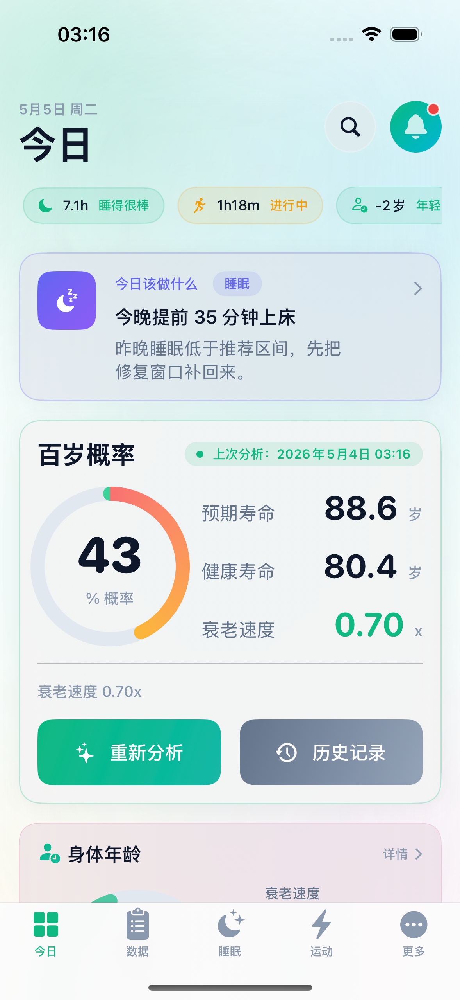
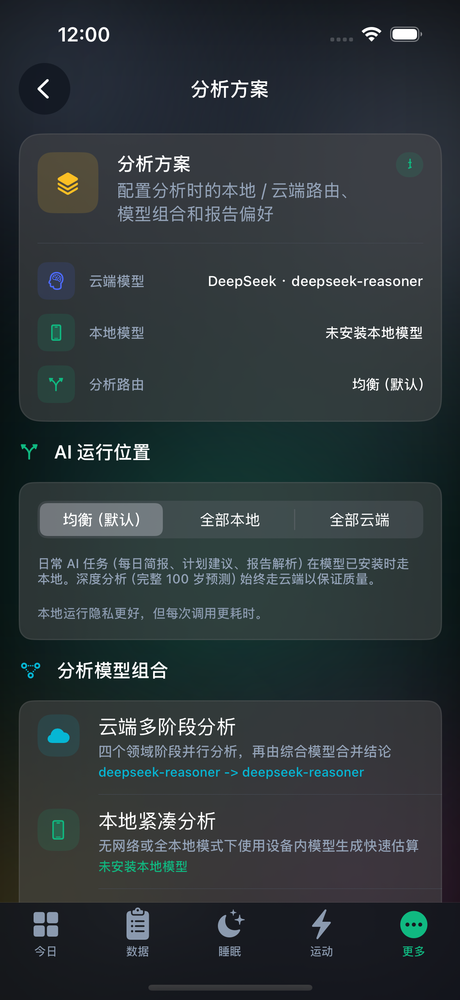
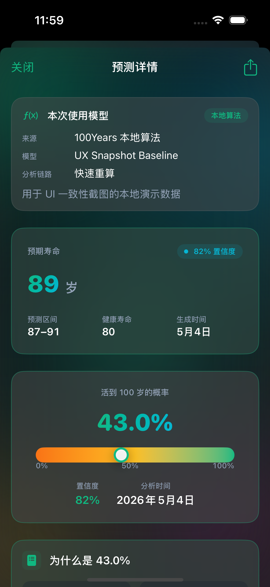

Demo Video
Status: Pending upload. Replace this card with the final video URL after recording the 5-minute real-device demo.
100 Years uses on-device Gemma 4 E2B/E4B to turn HealthKit signals, medical history, reports, and lifestyle context into local health briefs, longevity estimates, and privacy-preserving execution receipts.



Status: Pending upload. Replace this card with the final video URL after recording the 5-minute real-device demo.
English report and Chinese report are public copies for reviewers.
The source repo is private for health-data and unreleased-app reasons: Gracker/100Years. GDG Reviewer access has been granted.
| Feature | Support mode | Demo priority | What to show |
|---|---|---|---|
| Today health brief | Fully local | Must show | Gemma 4 agent calls read-only health tools, then returns a short health brief and receipt. |
| Gemma 4 tool calling | Fully local | Must show | Show JSON tool calls such as health snapshot, sleep analysis, and lifespan impact. |
| Single-stage longevity estimate | Fully local | Must show | Show medical history, HealthKit, reports, and lifestyle context entering a local prompt. |
| Report / PDF parsing | Fully local fallback | Recommended | Local OCR/PDFKit extraction plus local Gemma text structuring. |
| Compact sleep / exercise adjustment | Edge-cloud combined | Optional | Local compact estimate first; cloud can provide deeper analysis when explicitly selected. |
| Full scenario and lifestyle analysis | Cloud only | Comparison only | Long-context deep reasoning is not the primary Edge AI demo. |
| Gemma native vision | Wired, validation gated | Boundary note | Do not claim production readiness until real iPhone validation is complete. |
Open the local model or result receipt screen and show Gemma 4 E2B/E4B, execution route, and local/cloud label.
Generate the Today brief and explain the path through DailyBriefGenerator, AgentExecutor, GemmaAgentDriver, and HealthAgentTools.
Add a condition, family-history item, or medication and explain how it changes prompt context and disease-risk scoring.
Run compact longevity analysis and show parsed health scores, risk factors, recommendations, and metadata-only receipt.
Explain balanced, allLocal, and allCloud modes, then state which tasks are local, hybrid, cloud-only, or validation gated.
Receipts disclose route, model, data categories, and tool IDs, not raw disease names, notes, reports, or HealthKit values.
Outputs are health-model estimates and education, not diagnosis, treatment, or clinical prognosis.
The stable demo centers on local text inference, tool calling, local-first parsing, and receipts. Native vision remains real-device validation gated.